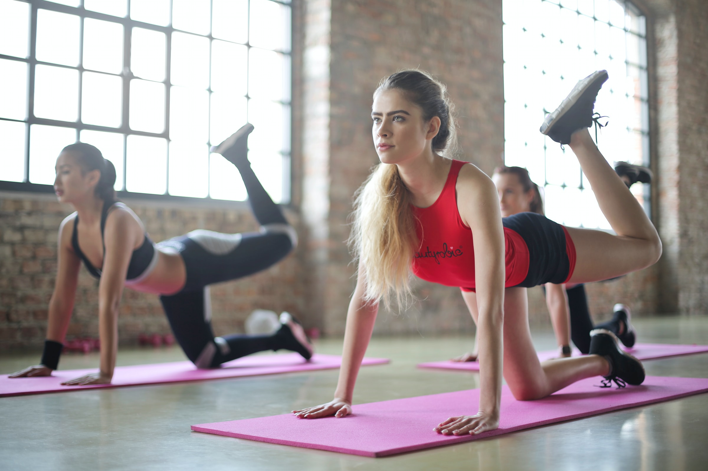
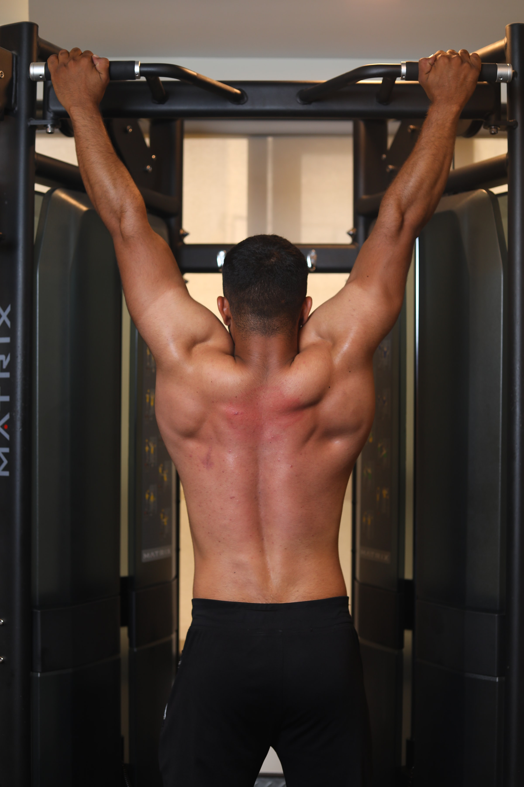
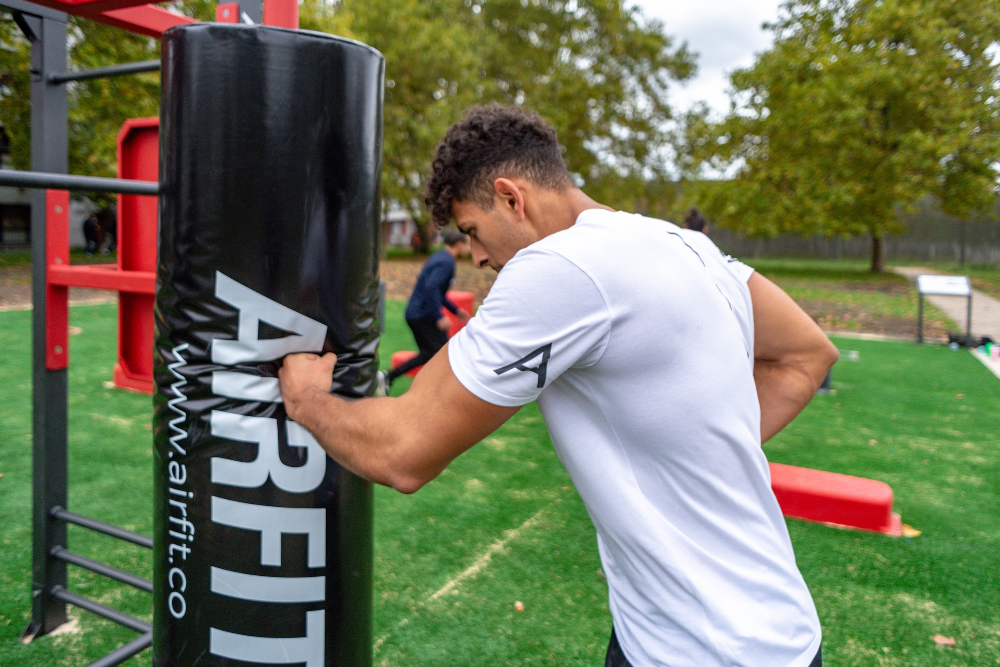

For 0 to 5 years
Children under 5 should not be inactive for long periods, except when they're asleep . Watching TV, travelling by car, bus or train, or being strapped into a buggy for long periods are not good for a child's health and development.All children under 5 who are overweight can improve their health by meeting the activity guidelines , even if their weight does not change. To achieve and maintain a healthy weight,they may need to do additional activity and make dietary changes.It is normal for young children to refuse to eat new foods, change their minds about foods they ate before, or want the same food every day. Continue to have meals and snacks at the same time each day and include a variety of foods.

For 5 to 15 years
Plan shorter training sessions to make your exercise time efficient.Perform full-body workouts instead of going for chest, legs, etc. separately.Go for walking, jogging, or running at least five days a week.Include circuit training, i.e., 5-10 different exercises to build endurance.Incorporate swimming, climbing, and other similar activities in your daily schedule.A 15 year-old shouldn’t try to lose weight unless they are recommended to do so, and are closely monitored by a physician or registered dietitian nutritionist. A teenager’s weight is only concerning if their weight on a growth chart has been increasing over time in the overweight or obese categories.The typical goal for overweight teenagers is not necessarily to lose weight, but to “grow into their weight” as they hit their growth spurts. It’s common for a teen to gain weight before they hit a growth spurt and slim out. The best thing a teenager can do now is to develop healthy diet habits, not go on a diet.

For 15 to 30 years
Plan shorter training sessions to make your exercise time efficient.Perform full-body workouts instead of going for chest, legs, etc. separately.Go for walking, jogging, or running at least five days a week.Include circuit training, i.e., 5-10 different exercises to build endurance.Incorporate swimming, climbing, and other similar activities in your daily schedule.Women ages 19-30 should eat 5 ½ ounces of protein every day, and men the same age should eat 6 ½ ounces. The amounts should be eaten throughout the day between meals and snacks. What counts as an ounce? One egg, 24 pistachios, 1/4 cup of cooked black beans are each the same as one ounce. One small chicken breast half is the same as 3 ounces. A good rule of thumb is to think of a deck of cards as about the size of three ounces, and one ounce is about the size of a golf ball.

For 30 to 50 years
Go for exercises which strengthen your body's complete range of motion.Do not rush through your workout sessions take it slow.Ensure that you warm-up and cool down before and after every training session. Club resistance training with cardio for improving your muscle mass.Limit your exercising schedule to about 3 to 4 days per week. Take proper rest and get enough sleep on the remaining days.All you need to do is start eating right food. However, in India, this can feel like an insurmountable challenge, given our food culture and dietary habits. For instance, a typical Indian meal is high in carbohydrates and sugar – we eat a lot of potatoes, rice, and sweets.